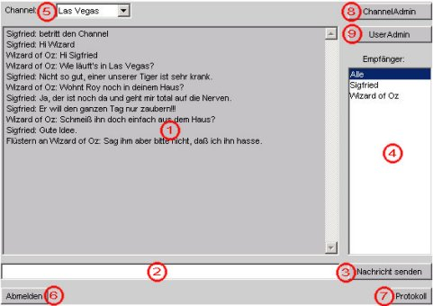

Kapitel 1: Benutzung des Chatclients
-
1.1 Anmelden
-

Wenn Sie sich bei Juliet anmelden möchten, geben Sie im Anmeldefenster
im Feld "Benutzername" Ihren Benutzernamen und im Feld "Kennwort" Ihr Kennwort ein,
sofern Sie ein Benutzerkonto bei Juliet besitzen. Besitzen Sie noch kein
Benutzerkonto, dann können Sie sich als Gast anmelden, indem Sie sich einen
Benutzernamen aussuchen, diesen im Feld "Benutzername" eintragen und die
Option "Gast" wählen.
Ist Ihre Anmeldung erfolgreich, so gelangen Sie ins Hauptfenster des Chats.
-
1.2 Das Hauptfenster
-

- Chatfenster
- Eingabezeile
- Knopf "Nachricht senden"
- Benutzerliste
- Channelauswahl
- Knopf "Abmelden"
- Knopf "Protokoll"
- Knopf "ChannelAdmin" (Administratorfunktion)
- Knopf "UserAdmin" (Administratorfunktion)
-
1.3 Chatten
-
Sie wollen einfach mit den anderen Teilnehmern im Raum chatten?
Um eine Nachricht in den Raum zu stellen, geben Sie diese in die
Eingabezeile (2) ein und stellen Sie sicher, das in der "Empfänger"-Liste (4)
"Alle" markiert ist (Default-Zustand). Bestätigen Sie danach mit der
Eingabetaste oder klicken Sie "Nachricht senden" (3).
Ihre Nachricht wird nun im Chatfester angezeigt und kann von
allen Teilnehmern im Raum gelesen werden.
-
1.4 Channel wechseln
-
Sie möchten gerne in einen anderen Channel wechseln?
Dazu klicken sie einfach auf die Channelauswahl (5) und wählen einen neuen Channel aus.
Daraufhin wird der Inhalt des Chatfensters geleert, um anzuzeigen, daß Sie sich im
neuen Channel befinden.
-
1.5 Flüstern
-
Sie möchten mit einem anderen Teilnehmer im Channel ein Privatgespräch
führen, von dem die anderen Teilnehmer nichts mitbekommen sollen?
Dazu tippen Sie Ihre Nachricht in die Eingabezeile (2) ein, markieren in der
"Empfänger"-Liste (4) den Teilnehmer, dem Sie die Nachricht senden möchten und
betätigen die Eingabetaste oder klicken auf "Nachricht senden".
Beachten Sie bitte, dass Ihre nächste Nachricht wieder öffentlich ist, da die
Markierung in der "Empfänger"-Liste auf "Alle" zurückspringt, sobald
die Nachricht abgeschickt wurde.
-
1.6 Chat mitscheiden
-
Sie möchten einen Mitschnitt Ihres geführten Chats haben?
Dazu klicken Sie auf "Protokoll" und ein Fenster mit dem von Ihnen geführten
Gesprächen erscheint. Diese Funktion beschränkt sich nicht auf den aktuell
betretenen Channel sondern schneidet alle Gespräche mit, die Sie in der
aktuellen Sitzung (bzw. nach dem letzten "Löschen" des Mitschnitts) geführt
haben inklusive aller geflüsterten Nachrichten.
Den Text in diesem Fenster können Sie einfach mit der Maus markieren,
kopieren und in jeden gängigen Texteditor wieder einfügen.
-
1.7 Abmelden
-
Sie haben genug gechattet und wollen sich abmelden?
Klicken Sie dazu einfach nur auf den Knopf "Abmelden". Sobald Sie wieder das
Anmeldefenster erreicht haben, sind sie erfolgreich abgemeldet.
(c) 2001 WorstCases